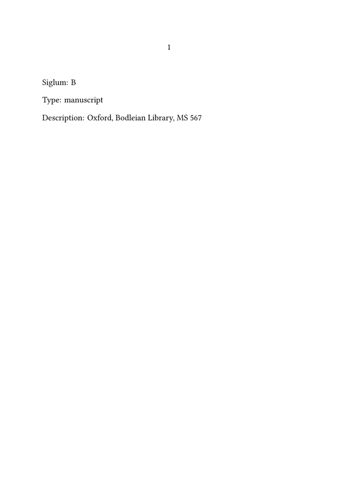
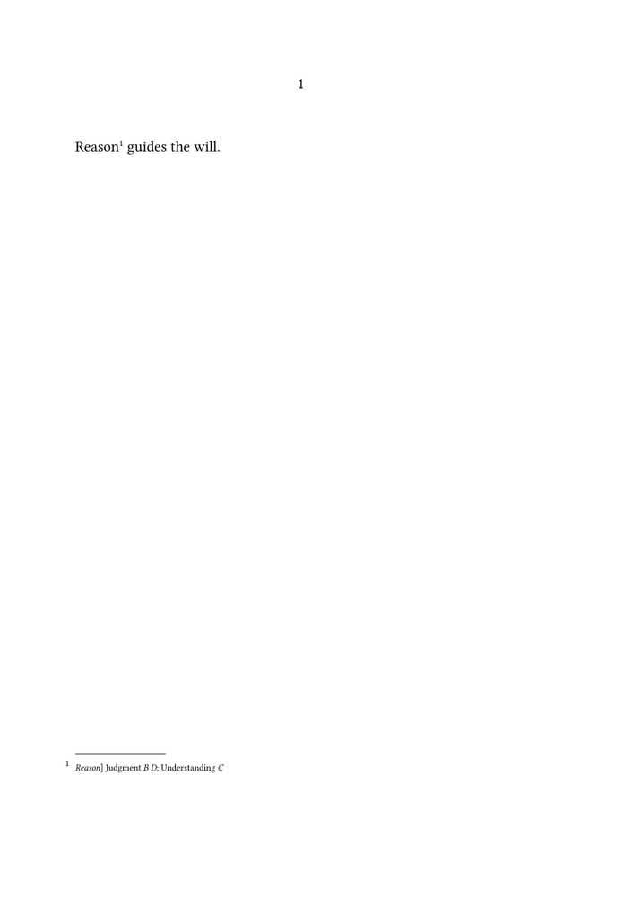
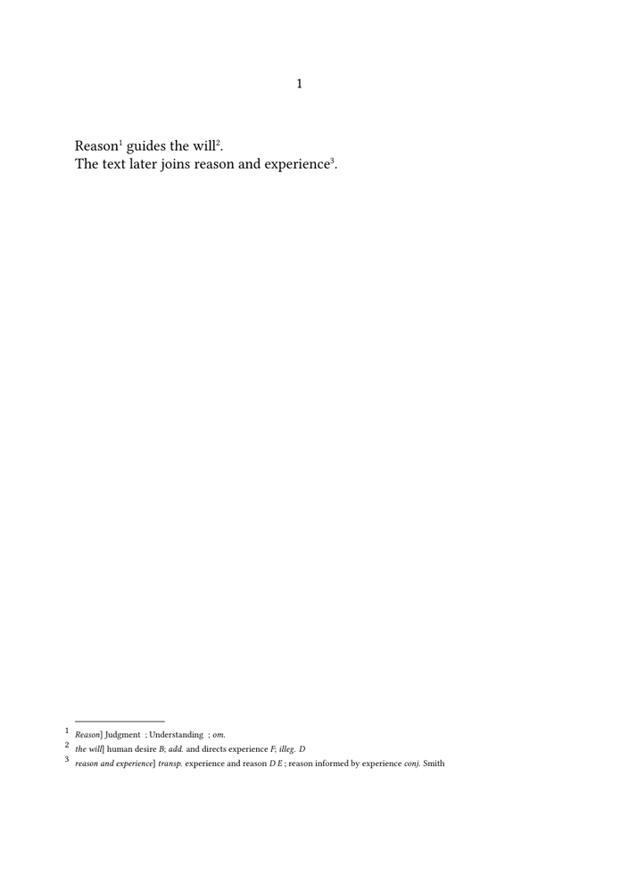

🚧 Work in progress. This guide is currently being drafted, corrected, and reviewed. Please do not modify the code unless this banner has been removed.
Critical apparatus guides: ← Guide 2 — Formatting a critical apparatus · Orientation · Glossary · Guide 3 of 6 · Next: Guide 4 — Using multiple apparatus layers →
A critical apparatus repeatedly refers to manuscripts, printed editions, and
other textual witnesses. In a short example, sigla can be typed directly:
\reading{Judgment}{B D}
In a larger edition, this becomes fragile. The same witness may occur hundreds of times, its printed siglum may change, and its description may be needed in an introduction, a witness table, or a discussion of textual relationships.
This guide develops a small witness-management interface in ordinary ConTeXt. It separates:
- the stable identifier used in the source;
- the siglum printed in the apparatus;
- the type and description of the witness;
- the readings and textual operations associated with that witness.
The progression is:
| Stage | Problem | Result |
|---|---|---|
| 1 | A siglum is repeated as literal text | The witness is declared once |
| 2 | The source needs a stable name distinct from the printed siglum | Identifier and siglum are separated |
| 3 | Apparatus entries need one or several declared witnesses | Readings use reusable witness references |
| 4 | The apparatus must describe more than alternative wording | Named commands represent omissions, additions, and other operations |
| 5 | Several witnesses repeatedly appear together | Witness groups store and reuse that relationship |
How this guide works. Each step adds one small layer to the same witness interface. The examples begin with a single declaration, then reuse it in apparatus entries before introducing lists, groups, and safeguards.
For definitions of the principal terms, see the Glossary of critical edition terms.
Contents
- 1 1. Understand the witness record
- 2 2. Declare and retrieve one witness
- 3 3. Control the appearance of sigla
- 4 4. Declare a working set of witnesses
- 5 5. Use declared witnesses in readings
- 6 6. Represent common textual operations
- 7 7. Process witness lists more compactly
- 8 8. Define reusable witness groups
- 9 9. Add visible safeguards
- 10 10. Reuse witness metadata outside the apparatus
- 11 11. Understand the data model
- 12 12. Complete working example
- 13 13. What this guide has established
- 14 14. Choose the next guide
- 15 Online resources
- 16 Related pages
1. Understand the witness record
A useful witness declaration should distinguish four elements:
| Element | Function | Example |
|---|---|---|
| Identifier | Stable key used in the ConTeXt source | ms-b
|
| Siglum | Short form printed in the apparatus | B
|
| Type | General category of witness | manuscript
|
| Description | Full human-readable identification | Oxford, Bodleian Library, MS 567 |
The identifier and siglum are not the same thing. The source may continue to
use ms-b even if the printed siglum later changes from
B to Ox.
Editorial principle. The identifier belongs to the source structure; the siglum belongs to the printed edition. Keeping them separate allows the visible notation to change without rewriting every apparatus entry.
2. Declare and retrieve one witness
ConTeXt variables provide a compact way to store several fields under one identifier.
\define[4]\definewitness
{\setvariables
[witness:#1]
[siglum={#2},
type={#3},
description={#4}]}
| Argument | Content |
|---|---|
#1
|
Stable witness identifier |
#2
|
Printed siglum |
#3
|
Witness type |
#4
|
Full description |
Declare one witness:
\definewitness
{ms-b}
{B}
{manuscript}
{Oxford, Bodleian Library, MS 567}
Define three retrieval commands:
\define[1]\witness
{\getvariable{witness:#1}{siglum}}
\define[1]\witnesstype
{\getvariable{witness:#1}{type}}
\define[1]\witnessdescription
{\getvariable{witness:#1}{description}}
-
\mainlanguage[en] \setuppapersize[A5] \setupbodyfont[libertinus,10pt] \define[4]\definewitness {\setvariables [witness:#1] [siglum={#2}, type={#3}, description={#4}]} \define[1]\witness {\getvariable{witness:#1}{siglum}} \define[1]\witnesstype {\getvariable{witness:#1}{type}} \define[1]\witnessdescription {\getvariable{witness:#1}{description}} \definewitness {ms-b} {B} {manuscript} {Oxford, Bodleian Library, MS 567} \starttext Siglum: \witness{ms-b} \blank Type: \witnesstype{ms-b} \blank Description: \witnessdescription{ms-b} \stoptext
-

At this stage, the declaration stores data only. Typography is controlled separately.
3. Control the appearance of sigla
Define one shared style:
\define[1]\witnessstyle
{{\it #1}}
Then apply it in the retrieval command:
\define[1]\witness
{\witnessstyle
{\getvariable{witness:#1}{siglum}}}
To print every siglum in bold instead, redefine only:
\define[1]\witnessstyle
{{\bf #1}}
Design principle. Witness declarations store editorial information.
Commands such as \witnessstyle control its presentation. Metadata
and typography should remain separate.
4. Declare a working set of witnesses
\definewitness{ms-a}{A}{manuscript}{Paris manuscript}
\definewitness{ms-b}{B}{manuscript}{Oxford manuscript}
\definewitness{ms-c}{C}{manuscript}{Cambridge manuscript}
\definewitness{ms-d}{D}{manuscript}{London manuscript}
\definewitness{editio-princeps}{E}{printed edition}{Basel, 1520}
\definewitness{revised-edition}{F}{printed edition}{Paris, 1542}
The identifiers are descriptive and stable. The apparatus remains compact because only the sigla are printed.
5. Use declared witnesses in readings
Define:
\define[2]\reading
{#1 #2}
A single witness:
\reading
{Judgment}
{\witness{ms-b}}
Several witnesses:
\reading
{Judgment}
{\witness{ms-b}\space
\witness{ms-d}}
The printed result is:
Judgment B D
The witness interface can now be combined with the apparatus commands from Building a simple critical apparatus:
-
\mainlanguage[en] \setuppapersize[A5] \setupbodyfont[libertinus,10pt] \definenote[apparatus] \setupnote[apparatus][location=page] \setupnotation[apparatus][way=bypage,style=\tfx] \define[4]\definewitness {\setvariables [witness:#1] [siglum={#2},type={#3},description={#4}]} \define[1]\witnessstyle{{\it #1}} \define[1]\witness {\witnessstyle{\getvariable{witness:#1}{siglum}}} \definewitness{ms-b}{B}{manuscript}{Oxford manuscript} \definewitness{ms-c}{C}{manuscript}{Cambridge manuscript} \definewitness{ms-d}{D}{manuscript}{London manuscript} \define[2]\variant {#1\apparatus{{\it #1}] #2}} \define[2]\reading {#1 #2} \starttext \variant {Reason} {\reading {Judgment} {\witness{ms-b}\space\witness{ms-d}}; \reading {Understanding} {\witness{ms-c}}} guides the will. \stoptext
-

6. Represent common textual operations
A reading supplies textual wording. A textual operation describes what happens to the text.
| Command | Function | Example output |
|---|---|---|
\omission
|
Record absence of the lemma | om. E
|
\addition
|
Record additional wording | add. and directs the will F
|
\transposition
|
Record different word order | transp. experience and reason D
|
\conjecture
|
Record an editorial proposal | Reason conj. Smith
|
\uncertainreading
|
Mark uncertain transcription | Judgment? C
|
\illegible
|
Record illegible text | illeg. D
|
\define[1]\omission
{{\it om.} #1}
\define[2]\addition
{{\it add.} #1 #2}
\define[2]\transposition
{{\it transp.} #1 #2}
\define[2]\conjecture
{#1 {\it conj.} #2}
\define[2]\uncertainreading
{#1? #2}
\define[1]\illegible
{{\it illeg.} #1}
Editorial caution. Abbreviations such as om.,
add., transp., and illeg. are not
built-in ConTeXt meanings. They belong to the editorial conventions of the
edition and should be documented there.
7. Process witness lists more compactly
\define[1]\processwitness
{\witness{#1}\space}
\define[1]\witnesslist
{\processcommalist[#1]\processwitness}
Then:
\witnesslist{ms-a,ms-b,ms-d}
prints:
A B D
Small implementation detail. The simple processor adds a trailing space. Check the final punctuation and spacing in the actual apparatus design.
8. Define reusable witness groups
\define[2]\definewitnessgroup
{\setvalue{witnessgroup:#1}{#2}}
\define[1]\witnessgroup
{\witnesslist{\getvalue{witnessgroup:#1}}}
Declare:
\definewitnessgroup{family-alpha}{ms-a,ms-b}
\definewitnessgroup{family-beta}{ms-c,ms-d}
\definewitnessgroup{all-editions}{editio-princeps,revised-edition}
Use:
\reading
{Judgment}
{\witnessgroup{family-alpha}}
Sometimes an edition prints a collective label instead:
\define[2]\definegrouplabel
{\setvalue{witnessgroup:label:#1}{#2}}
\define[1]\grouplabel
{\getvalue{witnessgroup:label:#1}}
\definegrouplabel{family-alpha}{\alpha}
| Command | Result |
|---|---|
\witnessgroup{family-alpha}
|
Prints the member sigla |
\grouplabel{family-alpha}
|
Prints the collective family label |
Editorial meaning. A witness group should represent a documented relationship among witnesses, not merely a convenient abbreviation.
9. Add visible safeguards
A guarded group command can be written as:
\define[1]\witnessgroup
{\doifdefinedelse
{witnessgroup:#1}
{\witnesslist
{\getvalue{witnessgroup:#1}}}
{{\bf [undefined witness group: #1]}}}
Likewise:
\define[1]\grouplabel
{\doifdefinedelse
{witnessgroup:label:#1}
{\getvalue{witnessgroup:label:#1}}
{{\bf [undefined group label: #1]}}}
Version check. Guarded tests involving variables should be compiled with the ConTeXt release used for the edition. These warnings are useful safeguards, but they are not a substitute for full dataset validation.
10. Reuse witness metadata outside the apparatus
\starttabulate[|l|l|p|]
\NC Siglum
\NC Type
\NC Description
\NC\NR
\HL
\NC \witness{ms-a}
\NC \witnesstype{ms-a}
\NC \witnessdescription{ms-a}
\NC\NR
\NC \witness{ms-b}
\NC \witnesstype{ms-b}
\NC \witnessdescription{ms-b}
\NC\NR
\stoptabulate
Changing a siglum centrally updates both the apparatus and the descriptive table.
11. Understand the data model
| Information | Example | Meaning |
|---|---|---|
| Witness declaration | \definewitness{ms-b}{B}{...}{...}
|
Describes what the witness is |
| Apparatus evidence | \reading{Judgment}{\witness{ms-b}}
|
Records what the witness reads at one location |
| Witness group | \definewitnessgroup{family-alpha}{ms-a,ms-b}
|
Records a relationship among witnesses |
The present macros remain a direct-composition interface. They do not yet provide automatic sorting, duplicate detection, witness-specific reports, filtering by operation, or export to another format.
Data model. Witness declarations describe sources; apparatus entries describe textual evidence at particular locations; group declarations describe relationships among witnesses.
12. Complete working example
-
\mainlanguage[en] \setuppapersize[A5] \setupbodyfont[libertinus,10pt] \definenote[apparatus] \setupnote[apparatus][location=page] \setupnotation[apparatus][way=bypage,style=\tfx] \define[4]\definewitness {\setvariables [witness:#1] [siglum={#2},type={#3},description={#4}]} \define[1]\witnessstyle{{\it #1}} \define[1]\witness {\witnessstyle{\getvariable{witness:#1}{siglum}}} \definewitness{ms-a}{A}{manuscript}{Paris manuscript} \definewitness{ms-b}{B}{manuscript}{Oxford manuscript} \definewitness{ms-c}{C}{manuscript}{Cambridge manuscript} \definewitness{ms-d}{D}{manuscript}{London manuscript} \definewitness{editio-princeps}{E}{printed edition}{Basel, 1520} \definewitness{revised-edition}{F}{printed edition}{Paris, 1542} \define[1]\processwitness{\witness{#1}\space} \define[1]\witnesslist{\processcommalist[#1]\processwitness} \define[2]\definewitnessgroup {\setvalue{witnessgroup:#1}{#2}} \define[1]\witnessgroup {\witnesslist{\getvalue{witnessgroup:#1}}} \definewitnessgroup{family-alpha}{ms-a,ms-b} \definewitnessgroup{family-beta}{ms-c,ms-d} \definewitnessgroup{all-editions}{editio-princeps,revised-edition} \define[2]\variant{#1\apparatus{{\it #1}] #2}} \define[2]\reading{#1 #2} \define[1]\omission{{\it om.} #1} \define[2]\addition{{\it add.} #1 #2} \define[2]\transposition{{\it transp.} #1 #2} \define[2]\conjecture{#1 {\it conj.} #2} \define[1]\illegible{{\it illeg.} #1} \starttext \variant {Reason} {\reading{Judgment}{\witnessgroup{family-alpha}}; \reading{Understanding}{\witnessgroup{family-beta}}; \omission{\witnessgroup{all-editions}}} guides \variant {the will} {\reading{human desire}{\witness{ms-b}}; \addition{and directs experience}{\witness{revised-edition}}; \illegible{\witness{ms-d}}}. The text later joins \variant {reason and experience} {\transposition {experience and reason} {\witnesslist{ms-d,editio-princeps}}; \conjecture {reason informed by experience} {Smith}}. \stoptext
-

13. What this guide has established
| Mechanism | Result |
|---|---|
| Witness declaration | Store identifier, siglum, type, and description once |
| Witness retrieval | Print the current siglum from a stable source identifier |
| Named textual operations | Distinguish readings, omissions, additions, and other cases |
| Witness lists | Process several identifiers more compactly |
| Witness groups | Reuse documented relationships among witnesses |
| Safeguards | Make undeclared identifiers or groups visible |
What this guide has established. Witnesses can be declared once and referenced through stable identifiers. Their sigla, types, descriptions, groups, and associated textual operations can then be reused without hard-coding the same information throughout the apparatus.
14. Choose the next guide
| Next task | Continue with |
|---|---|
| Change the typography of the apparatus | Guide 2 |
| Create several independent note layers | Guide 4 |
| Compose an original text and translation in parallel | Guide 5 |
| Register, sort, filter, and validate critical records | Guide 6 |
| Process structured TEI critical data | Building critical editions from TEI XML |
Online resources
- Variables — storing and retrieving named fields;
- Command/setvariables — defining variable sets;
- Command/getvariable — retrieving individual fields;
- ConTeXt and Lua programming/Tutorials/System Macros/Key Value Assignments — key–value data;
- Footnotes — note mechanisms used by the apparatus.
Related pages
- Building a critical apparatus with ConTeXt
- Glossary of critical edition terms
- Building a simple critical apparatus
- Formatting a critical apparatus
- Using multiple apparatus layers
- Typesetting an original text and translation in parallel
- Managing structured critical data with Lua
- Building critical editions from TEI XML
Critical apparatus guides: ← Guide 2 — Formatting a critical apparatus · Orientation · Glossary · Guide 3 of 6 · Next: Guide 4 — Using multiple apparatus layers →